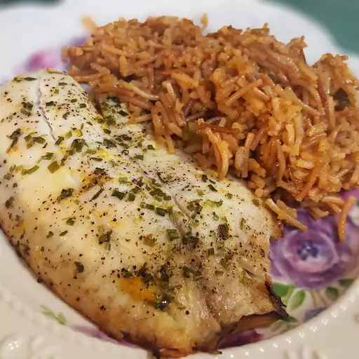

Lemon Garlic Tilapia

A lemon garlic tilapia
This is a delicious and healthy tilapia recipe that takes no time at all to make. You can bake it or even grill it. Tastes great either way!
Ingredients
- nonstick cooking spray
- 4 tilapia fillets
- 3 tablespoons fresh lemon juice
- 1 tablespoon butter, melted
- 1 clove garlic, finely chopped
- 1 teaspoon dried parsley flakes
- 1 dash pepper to taste
Steps
- Preheat the oven to 375 degrees F (190 degrees C). Spray a baking dish with nonstick cooking spray.
- Rinse tilapia fillets under cool water, and pat dry with paper towels
- Place fillets in the prepared baking dish. Pour lemon juice over fillets, then drizzle butter on top. Sprinkle with garlic, parsley, and pepper.
- Bake in the preheated oven until fish is white and flakes when pulled apart with a fork, about 30 minutes.